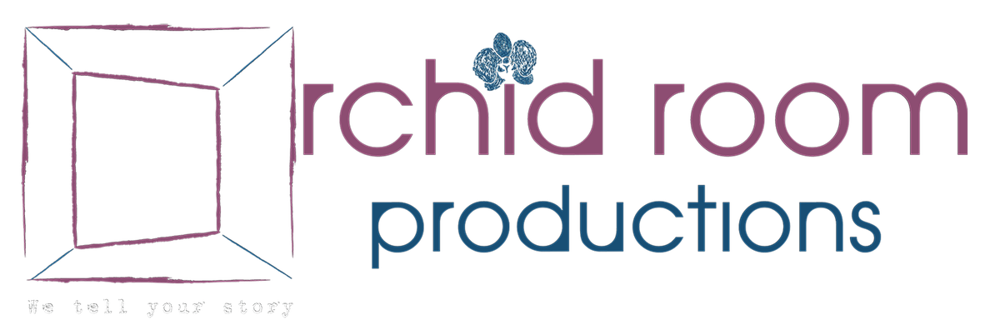

Sample Projects · About Us · Script Coverage · Script Desk · Video Retainers · Workshops · Contact UsWe write the script: research, treatment, AV script, interview guide, shot and b-roll list, and fact check. You keep the production, whether that is your own crew or a partner studio. Monthly scripting capacity for NGOs, INGOs, foundations, and UN and multilateral agencies.
Book a 20-minute scoping callWe have extraordinary technical talent — cinematographers, directors, editors and field crews who can make almost anything look beautiful. What we too rarely do is write first. A development film often begins with a shoot and a first draft, and the story gets assembled in the edit, out of whatever the talking heads happened to say.
I learned the opposite discipline over twenty years in television, including documentaries I spearheaded for National Geographic and work with the leading production houses of that era. On every production, one department was overlooked: the writer. Studios would hire an English graduate and call it scripting, as if storytelling were a matter of grammar. It isn’t. The script decides what the film is before a single frame is shot.
So I embedded myself at the scripting stage of everything I produced, and held our scripts to broadcast Standards & Practices: every claim annotated to a credible source, every sequence built as a narrative rather than an excuse for exposition, every contributor treated as a person with a story and not a quote to fill a gap. I started Orchid Room Productions as a writers’ room — before the streaming platforms reached India and changed how work gets commissioned — because the script was the thing worth protecting.
The Script Desk is that conviction, offered on its own. You bring the cause, the footage and the crew. We bring the part the industry keeps skipping.
Sunil PappuFounder, Orchid Room Productions
A scripting-only service. It is not a production retainer. Each script is a complete development package that your team, a production partner or a field unit can shoot and edit from.
We read your source material, reports, transcripts and results frameworks, then confirm audience, tone, duration and objective in writing before drafting.
Two-column visuals and audio, voiceover, on-screen text, interview bytes, and directional notes. Delivered in English, Hindi or any vernacular language (Telugu, Tamil, Bengali, Punjabi and more), with bilingual versions available.
Interview guide, shot and b-roll list, fact-check log with sources, and a sign-off-ready draft for your editorial review.
Our scripting discipline, made concrete. Every script we deliver is built on three non-negotiables.
Every factual claim is annotated to a credible source in a fact-check log that travels with the script. The discipline comes straight from broadcast Standards & Practices, so your communications and M&E teams can stand behind every line.
We build a story with an arc and a reason to keep watching, not a string of talking heads assembled to explain a programme. The treatment is agreed before the script is written, so the structure is deliberate.
Beneficiaries and field voices are written as people with a story, never reduced to a soundbite that fills a gap. Interview guides are designed to let them speak with dignity and specificity.
One script unit is one AV film of up to 10 minutes, covering one theme or beneficiary story.
| Included in every script | Notes |
|---|---|
| Fact-check log, every claim sourced | Each statement annotated to a credible source, to broadcast Standards & Practices |
| Creative brief confirmation | Written summary of audience, objective, duration and tone |
| Research summary | Background reading and key themes, with sources |
| Treatment | Story arc and structure, 2 to 3 pages |
| AV script | Two-column format, one language |
| Interview guide and b-roll list | Questions per speaker and shot suggestions, written to let contributors speak as people |
| Three revision rounds | Within the agreed timeline |
Monthly desks with a 3-month minimum, or single scripts on request. Ask for a quotation tailored to your volume and timeline.
One script, no commitment.
Three scripts a month, minimum.
Four scripts a month, minimum.
Six scripts a month, minimum, with priority scheduling.
Bilingual versions, treatment-only work and rush delivery are available as add-ons.
| Script Desk (this page) | Video retainers | Script coverage | |
|---|---|---|---|
| Buyer | Communications, M&E or learning teams at development organisations | Same organisations, when they want finished films | Fiction writers and producers |
| What you get | Scripts and shoot-ready packages | Finished 8 to 10 minute films, with graphics, cuts and subtitles | Written reads of a feature or pilot |
| Production | None. You or your partner produce. | Included: edit, graphics, sound and delivery | None |
| Retainer | Yes, 3-month minimum, with monthly scripts | Yes | No |
Donor-report films, impact stories and programme explainers.
Campaign scripts, annual-report films and learning modules.
Beneficiary portraits, programme case studies and CSR report films.
Not under this service. If you need production, the Video retainers on video.orchidroomproductions.com cover that. Scripts from the Script Desk can go to that retainer or to any other producer.
No. The Script Desk is for non-fiction and development films. Fiction script reads are at scripts.orchidroomproductions.com.
Terms are set in the agreement. We propose that your organisation owns the final script for its own use, and that we keep a non-commercial right to show the work in our portfolio, with written approval for any named credit.
Scripts can be written in English, Hindi or any vernacular language (Telugu, Tamil, Bengali, Punjabi and more), with bilingual versions as an add-on.
Tell us the objective, audience and rough volume. We reply with a plan, a rate and a start date.
sunilrpappu@orchidroomproductions.com